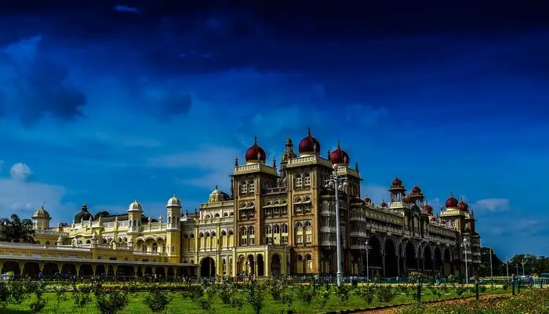

Mysore - City Of Palaces

Mysore has been one of the most iconic places in the history of Karnataka as it used to be the home for the Wodeyar rulers for seven centuries. It is visited by more than 2.5 million tourists every year. That's not all. Mysore has myriad attractions for you to explore like Lalitha Mahal, Jagmohan Palace, Brindavan Gardens, and Mysore Zoo. You could also go shopping in the city and buy famous souvenirs like Khadi cotton, incense sticks, sandalwood products, etc. Do not forget to try the world-famous Mysore Pak on your visit.
Places to Stay: Radisson Blu Atria Hotel, Ramada Encore Bangalore Domlur, Hotel Naveen Regency, Hotel Vayal Wayanad, Goldfinch Hotel
Places to Visit: Mysore Palace, Lalitha Mahal, Jagmohan Palace, Karanji Lake, Melody World Wax Museum, Railway Museum
Things to do in Mysore: Theme Parks, Historical Tour, Nature Tours, Silk Shopping, Wildlife Spotting, and long strolls in beautiful gardens
Ideal for: Families, friends, history, nature and archaeological exploration
Ideal trip duration: 2 days
Weather: Mysore enjoys cool winters and warm summers and the annual temperature is moderate.
Best time to visit Mysore: July to February
How to reach Mysore: Mysore has a domestic airport, Railway Station and well-connected network of roads. Cars, self-driven rentals, buses and taxis etc are readily available.
Go Back